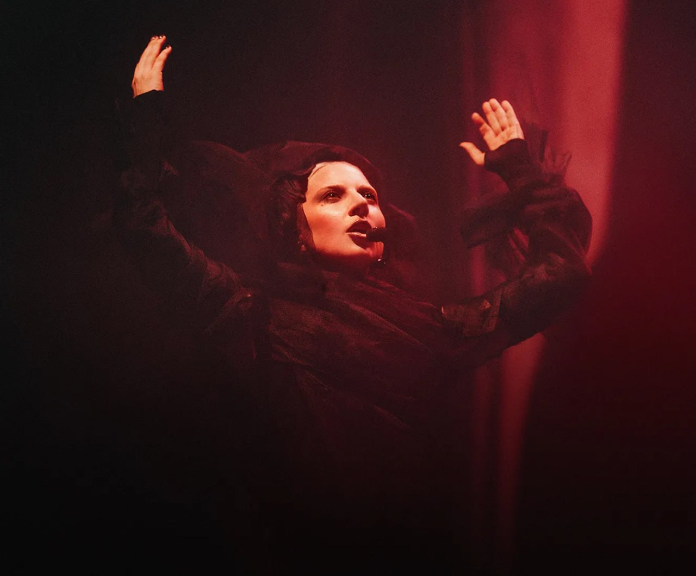

Marcando o encerramento da era Mayhem, Lady Gaga lança show fúnebre com releituras das músicas do álbum que agitou 2025.

Disponível na Apple Music, descubra como música, teatro e moda se unem para contar essa história.